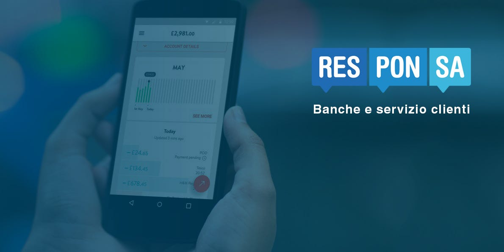

Banche e servizio clienti: un rapporto cambiato dalle tecnologie digital

Il rapporto dell’Abi Lab in collaborazione con la School of Management del Politecnico di Milano, mette in luce nel 2014 i clienti che si sono serviti dell’accesso alla banca in “mobilità” con l’uso di smartphone e tablet sono aumentati di oltre l’80%.
Che cosa ha favorito questo? Semplicemente la diffusione delle App! In media, solo durante il 2014 ne sono state scaricate circa 8.800 al giorno, con un incremento del 17% sul 2013. Tutte le banche prese come campione stavano offrendo ai loro clienti servizi e funzionalità studiati appositamente per smartphone e il 77% anche un’offerta specifica per il tablet.
Ma è stato scoperto anche qualcosa in più: emerge infatti che il 36% delle banche offre, in aggiunta alla classica applicazione di mobile banking, un’App dedicata ai pagamenti elettronici presso i punti vendita, mentre il 27% ne ha una che funge da borsellino elettronico. Sono presenti anche App per operare sui mercati (23% delle banche), per la comunicazione (18%), per i servizi di assistenza ai clienti (14%) e per la gestione della finanza personale (9 per cento).
Tra i servizi più utilizzati all’interno delle App troviamo che il 65% è la consultazione del saldo e i movimenti di conto, il 54% è la localizzazione della filiale o dello sportello automatico situati in prossimità. Lo smartphone viene utilizzato anche per l’accesso ai servizi dispositivi, dato che il 37% effettua bonifici e giroconti.
COSTA STA CAMBIANDO IN CONCRETO NEL MONDO BANCARIO?
La tendenza che si sta delineando da parte delle banche riguarda l’impiego di sistemi di assistenza tramite chat o collegamento telefonico e servizi di gestione della finanza personale nell’arco dei prossimi 3 anni; è interessante notare che le comunicazioni effettuate via chat rispetto al 2014 sono aumentate del 66%.
Emerge quindi anche una mutata sensibilità nei confronti dei servizi di caring da proporre al cliente, ottimizzati e customizzati in un quadro sempre più omnichannel. La diversificazione dei canali utilizzati ha portato anche ad un posizionamento delle banche all’interno dei canali social: l’86% delle banche è presente sui maggiori social network.
PERSONAL DIGITAL BANKER: IL SUPERAMENTO DEL TRADIZIONALE CONTACT CENTER
I clienti delle banche si stanno abituando sempre di più a concepire i servizi offerti dalle banche all’interno di esperienze digitali; un esempio molto riguarda un recente studio che ha evidenziato come, negli Stati Uniti 4 cittadini americani su 10 non hanno fatto visita ad una filiale nell’arco degli ultimi 6 mesi. Il consulente che prima era abituato ad operare come personal banker incontrando i clienti faccia a faccia, si sta trasformando in un personal banker digitale, in grado di proporre a ciascun cliente soluzioni su misura studiate per le specifiche esigenze.
Se guardiamo al tema dell’assistenza ai clienti, l’Osservatorio sui Contact Center bancari promosso da ABI Lab e dall’Ufficio Analisi Gestionali dell’Associazione Bancaria Italiana ha certificato una notevole crescita dell’assistenza telematica al cliente nel settore bancario. Infatti a differenza di altri settori, per quanto riguarda le banche i canali di contact sono stati istituiti di recente; in passato si doveva raggiungere la filiale più vicina per ottenere anche informazioni banali e l’introduzione di questo nuovo tipo di servizio ha fatto sì che gli utenti hanno cominciato a preferire le chiamate ai call center piuttosto che doversi recare in banca. Ma l’avvento del personal digital banker è solo una questione di tempo: infatti le novità tecnologiche nel settore del caring, come i chatbot, permettono di ottenere informazioni e supporto in maniera ancora più veloce e comoda, perciò poco a poco verranno impiegati in maniera sempre più consistente.
Basti pensare che le comunicazioni via chat rispetto al 2014 sono aumentate del 66%, i contatti via e-mail ben del 10%. Inoltre continua a rafforzarsi infine l’interesse del settore bancario nei confronti dei social: l’86% delle banche con Contact Center è presente sui maggiori social network, e quasi la metà impegna operatori nel dialogo con il cliente social (il 43% su Facebook e il 33% Twitter).